Metodo length
El método length en JavaScript devuelve la cantidad de elementos de un array o la longitud de una cadena de texto. Es útil para saber cuántos elementos tiene un array o cuántos caracteres hay en una cadena.

Bucle for
El bucle for permite iterar sobre un array. Aquí recorremos el array letras e imprimimos cada elemento.
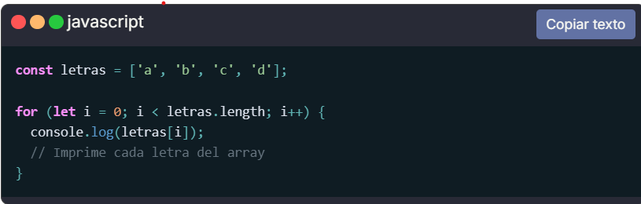Bucle for...in
El bucle for...in permite iterar sobre las propiedades enumerables de un objeto. En cada iteración, accede a una propiedad del objeto y muestra su nombre y valor correspondiente en la consola.
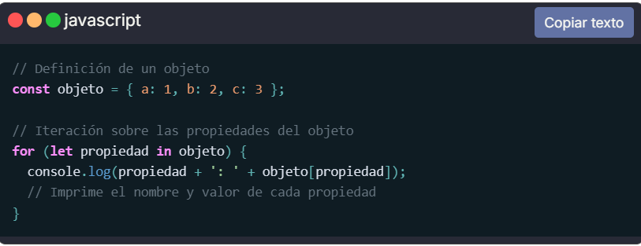Bucle while
Usando el bucle while para imprimir los números del 0 al 4 en la consola. El bucle se ejecuta mientras el contador sea menor que 5, incrementando el contador en cada iteración.
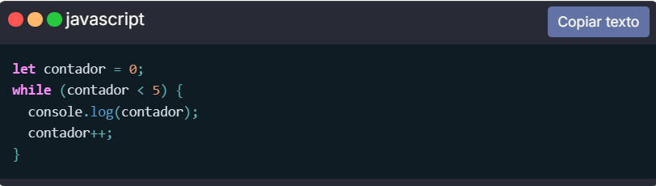Metodo forEach
Cómo usar el método forEach() en un array en JavaScript para recorrer cada elemento del array y realizar una acción específica, en este caso, imprimir cada fruta en la consola.
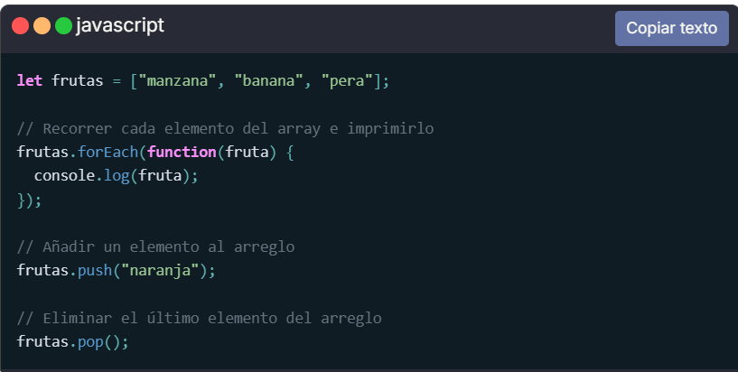Metodo map
El método map() en JavaScript se utiliza para aplicar una función a cada elemento del array numeros. Se duplica cada número del array original, resultando en la impresión del nuevo array [2, 4, 6].
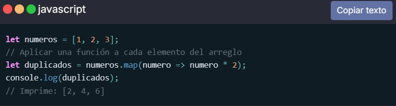Metodo filter
El método filter() en JavaScript se utiliza para filtrar los elementos de un array según una condición.
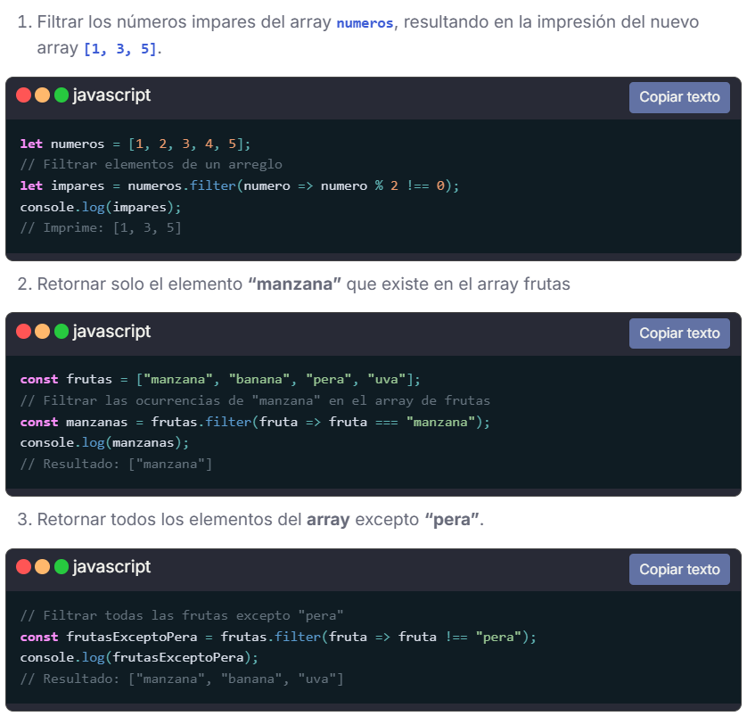Metodo reduce
El método reduce() en JavaScript se utiliza para reducir un array a un único valor. En este caso, se suman todos los números del array numeros utilizando la función de reducción, comenzando con un valor inicial de 0, resultando en la impresión del valor total de 15.
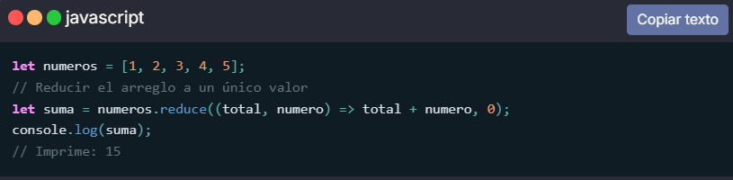Metodo some
El método some() se utiliza en JavaScript para verificar si al menos un elemento de un array cumple con cierta condición especificada en una función de retorno. Itera sobre cada elemento del array y devuelve true si al menos un elemento cumple con la condición, y false si ningún elemento la cumple. Este método es útil cuando se desea verificar si al menos un elemento de un array satisface ciertos criterios sin necesidad de iterar manualmente.
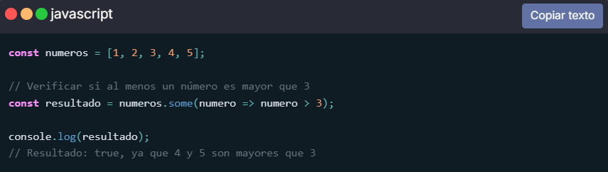Metodo every
El método every() se utiliza en JavaScript para verificar si todos los elementos de un array cumplen con cierta condición especificada en una función de retorno. Itera sobre cada elemento del array y devuelve true si todos los elementos cumplen con la condición, o false en caso contrario. Este método es útil cuando se desea verificar si todos los elementos de un array satisfacen ciertos criterios.
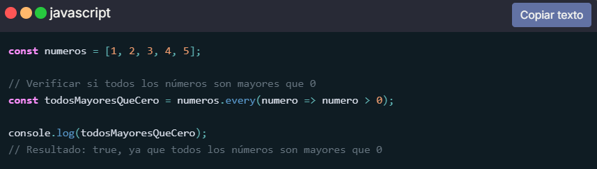Metodo find
El método find() se utiliza en JavaScript para encontrar el primer elemento en un array que cumple con cierta condición especificada en una función de retorno. Itera sobre cada elemento del array y devuelve el primer elemento que cumple con la condición, o undefined si ningún elemento la cumple. Este método es útil cuando se desea encontrar un elemento específico en un array basado en ciertos criterios.
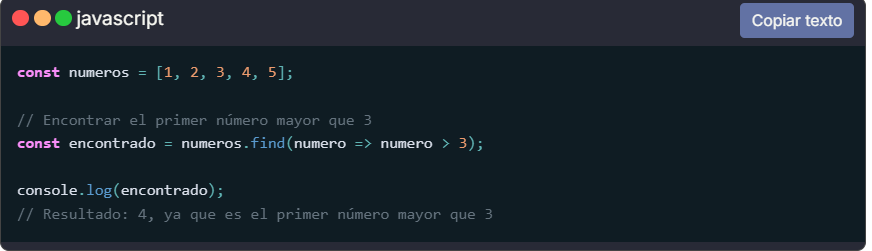Metodo findIndex
El método findIndex() en JavaScript se usa para encontrar el índice del primer elemento en un array que cumple con una condición específica. El método devuelve -1 si no se encuentra ningún elemento que cumpla con la condición.
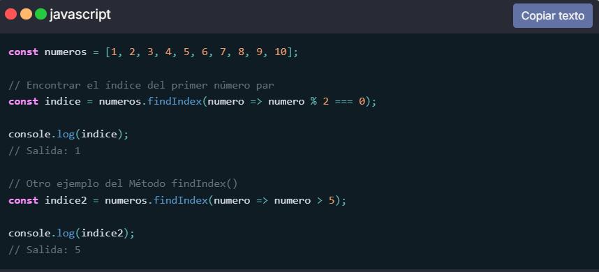Metodo indexOf
Cómo utilizar el método indexOf() en JavaScript para encontrar la posición de una palabra específica dentro de una cadena de texto. En este caso, se busca la palabra "perro" dentro de la frase "El perro come comida", y se imprime la posición de la palabra encontrada.
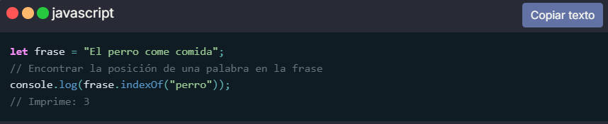Metodo slice
El método slice() en JavaScript permite extraer una parte específica de una cadena de texto. Se especifica el índice inicial (0) y el índice final (10) de la porción que se desea extraer de la cadena "JavaScript es divertido", lo que resulta en la impresión de "JavaScript".
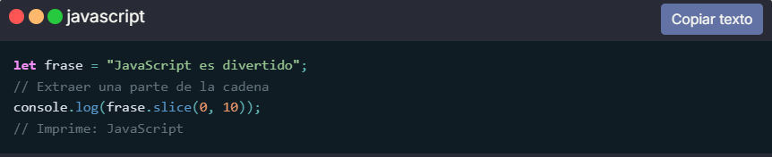Metodo concat
El método concat() se utiliza para concatenar dos o más arrays en uno nuevo.
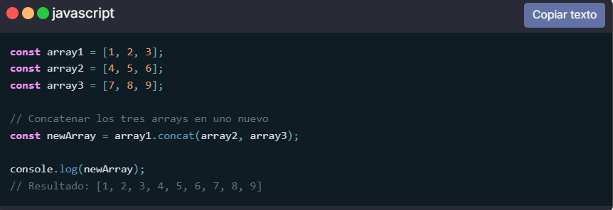Metodo push
El método push() agrega uno o más elementos al final de un array y devuelve la nueva longitud del array. Modifica el array original.
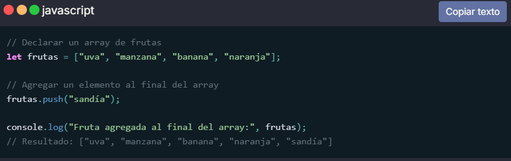metodo pop
El método pop() en JavaScript se utiliza para eliminar el último elemento de un array. En este caso, se elimina el número 3 del array numeros, resultando en la impresión del nuevo array [1, 2].
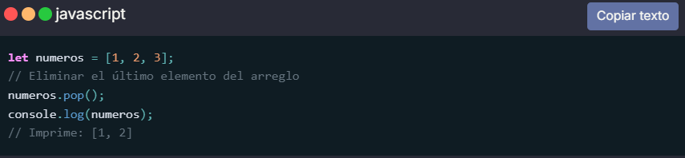Metodo shift
El método shift() en JavaScript se utiliza para eliminar el primer elemento de un array. En este caso, se elimina el número 1 del array numeros, resultando en la impresión del nuevo array [2, 3].
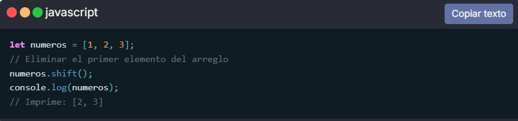Metodo unshift
El método unshift() en JavaScript se utiliza para añadir un elemento al inicio de un array. En este caso, se agrega el número 1 al array numeros, resultando en la impresión del nuevo array [1, 2, 3].
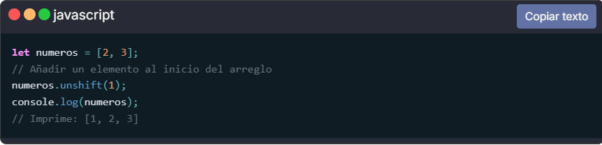Metodo splice
El método splice() modifica el contenido de un array eliminando o reemplazando elementos existentes y/o agregando nuevos elementos en su lugar. En este caso, se utiliza splice() para eliminar un elemento específico del array. javascript

Metodo reverse
El método reverse() en JavaScript se utiliza para invertir el orden de los elementos en un array. Los números en el array numeros se invierten, resultando en la impresión del nuevo array [3, 2, 1].
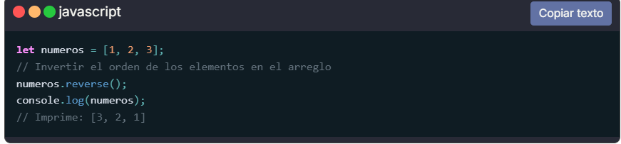Metodo sort
El método sort() en JavaScript se utiliza para ordenar los elementos de un array alfabéticamente. En este caso, se ordenan las frutas en el array frutas, resultando en la impresión del nuevo array ["manzana", "naranja", "uva"].
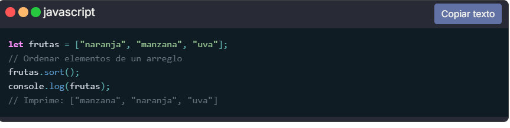